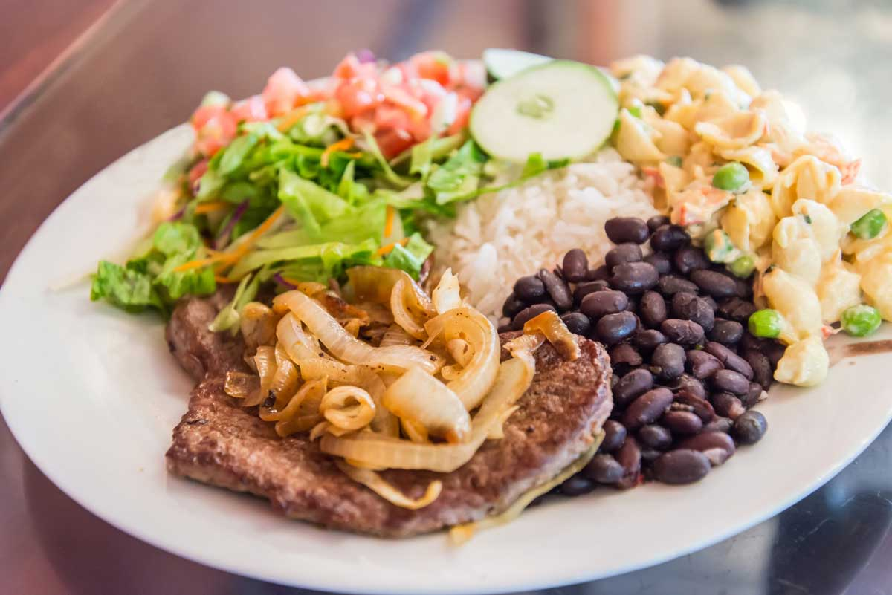
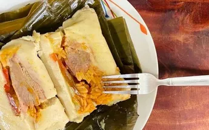
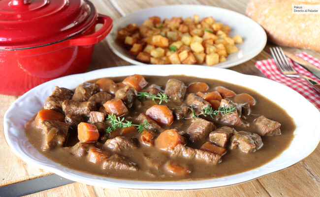

Receta 1: Casado
Ingredientes
- Arroz
- Frijoles
- Plátano maduro
- Carne o pollo
- Ensalada
- Aguacate
Pasos a seguir
- Cocinar Arroz
- Cocinar la carne de la manera a elección
- Cocinar los frijoles
- Preparar la ensalada
- Servir caliente
Receta 2: Tamal tradicional
Ingredientes
- 2kg de masa
- 1kg de papas
- 1kg de costilla de cerdo
- 1/2 kg de posta de cerdo
Pasos a seguir
- Lo primero que se debe realizar es cocinar la carne con distintas especies como sal, pimienta y cominos, ajos y cebollas, mientras tanto se cocina el maíz por aproximadamente 25 minutos
- Luego molerlo y cocinar la masa de nuevo agregándole las especies al gusto, manteca de cerdo y el propio caldo de la carne previamente cocida, es importante mover esta mezcla hasta que este lista para evitar que se pegue.
- Finalmente el montaje del tamal en la hoja de plátano
Receta 3: Carne en Carne ensalsa
Ingredientes
- Carne
- Tomates
- Especias de su elección
Pasos a seguir
- Comenzamos repasando los tacos de carne de ternera para hacerlos todos de un tamaño similar y retirar los excesos de grasa que puedan tener
- En la misma sartén pochamos durante 5 minutos las chalotas, los ajos y la cebolla picado todo en trocitos pequeños.
- Una vez pochado ligeramente, añadimos una cucharada de harina, rehogamos y lo ponemos todo en la olla con la carne
- Cerramos y cocemos a máxima presión -dos anillos- durante 25 minutos.